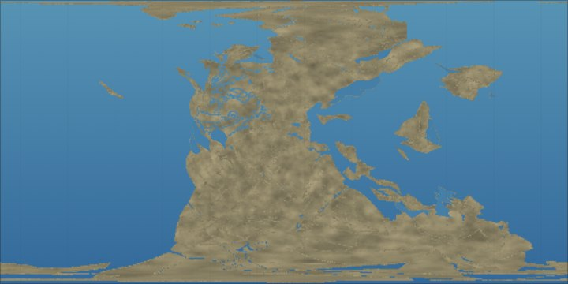

Time Machine
Tap a period, a mark, or drag a copper dot.
playGlobereset
the ground
The whole history of the Earth fits on this page: four and a half billion years, from the crash that made the Moon to this morning. You can go to any year you like and see what the world looked like then.

It isn’t finished. New things arrive all the time, so come back.
Under How this works, in the column on the left, tap Timeline, Map or Graphs. A note opens explaining each one.
Each coloured band is a period. Tap one and it opens as a longer line underneath.
Two copper dots stand on every line with a bar between them. The solid dot is the year you’re in, and the map shows the Earth in that year. Drag it, or tap the hollow dot to make that the year. The bar says how long the stretch between the dots is. Tap the bar and the stretch opens as a longer line underneath; drag the bar to slide the stretch along.
Tap a mark and you get a sentence about what happened. More, at the end, tells the rest, with pictures when there are any.
Tap play, above the map on the left, and the left dot walks to the right one while the world changes under it.
Globe, above the middle of the map, turns the flat map into a world you can spin. Drag it as far as you like. reset, at the right, brings it home.
Watch the sea. Twelve thousand years ago it was so low you could walk from London to Paris, from Siberia to Alaska, or from Boston to Nantucket.
For the last 200 million years we know pretty well where the continents were, because the ocean floor kept a record of how it spread. Before that, the record is thinner, and the land turns to plain rock, then to pale shapes with dashed edges. We know there was land, and that it moved. We don’t know where.
Cities puts today’s cities on the globe, and they ride along with the land. Where was Melbourne a hundred million years ago? Tap Cities and drag the copper dot. (It wasn’t anywhere you’d want to go swimming.)
Energy source: how much of the warmth at the Earth’s surface came from inside the planet, and how much from the Sun.
Day length: when the Moon was made, a day was perhaps five hours long. The Moon has been slowing us down ever since.
Oxygen: how much oxygen was in the air, compared with today. For the first two billion years there was almost none.
Minerals: how many kinds of mineral there were. The number jumped when oxygen arrived in the air.
More graphs are on the way.
This is also the master record behind the maps and dates in our stories, such as Van Gogh’s Starry Night, so they all agree with each other.
The picture on the wall: Naomi Devil, Idő-töltés (2016), a cybernetic sculpture with Nicolas Schöffer’s hourglass. Photograph by Darabos György, Wikimedia Commons, CC BY-SA 4.0, cropped.